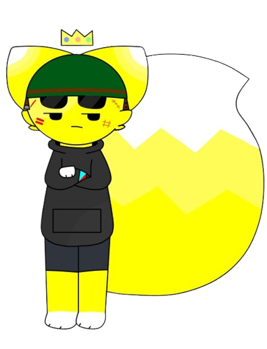

david
basic info
Gender: Male
Height: 5'11
Weight: 185 lbs
Sexuality: Bisexual
biography
David (who's also my sona) is some sort a yellow fox and cat hybrid. He's known for having the largest and fluffiest tail. He wears a crown which can somehow levitate, a dark grey hoodie, and some dark jean-like shorts, along with a helmet. He always has his helmet on due to him being a war veteran with 50 medals to its name, and for safety reasons. No one truly knows what he looks like without his helmet...
His personality is a tad bit questionable, as he's usually unamused, but he likes to be funny, can get along with people if cool enough, and he's usually nice most of time, but can get unintentionally rude at times, tho he doesn't bite. Also he absolutely loves baleadas.